Bienvenido a PROPIA
PROPIA es la plataforma para administrar tu copropiedad con todas las herramientas en un solo lugar. Este manual te lleva paso a paso por cada modulo del sistema, desde tu primer ingreso hasta la operacion diaria.
Que cubre este manual
Acceso al sistema
Login, registro self-service, OTP y wizard de activacion.
Mi Copropiedad
Las 8 secciones que definen tu copropiedad: identidad, distribucion, equipo, gobierno, servicios, zonas, equipos y finanzas.
Modulos de gestion
Directorio, usuarios, PQRSD, cartera, presupuesto, tareas, documentos, asambleas, reservas, comunicaciones, porteria, mantenimiento y reportes.
Asistente IA
Como usar el copiloto que consulta y opera tu copropiedad en lenguaje natural.
Multi-copropiedad
Como cambiar entre copropiedades si administras varias.
Cuenta y seguridad
Tu perfil, contrasena, y cierre seguro de sesion.
Acceder al sistema
El acceso a PROPIA es unificado: la misma pantalla sirve para administradores, consejeros y operarios. El sistema te lleva a la copropiedad correcta segun tu usuario.
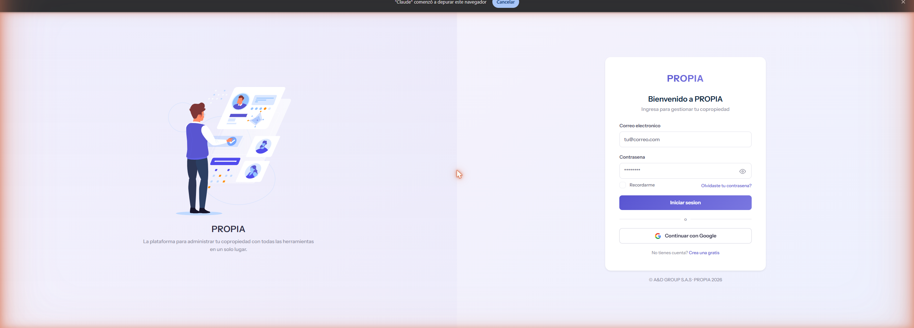
Pasos
- Ingresa tu correo electronico registrado en PROPIA (por ejemplo
admin@tudominio.com). - Escribe tu contrasena. Puedes hacer clic en el icono del ojo para verla mientras la tipeas.
- Marca Recordarme si vas a usar este equipo de forma regular.
- Pulsa Iniciar sesion.
Que pasa despues
- Si solo administras una copropiedad, entras directo a Mi Copropiedad.
- Si administras varias, podras elegir cual quieres abrir desde el selector arriba a la izquierda.
- Si tu cuenta tiene wizard de activacion pendiente, te lleva al paso donde quedaste.
Acceder con Google
Como alternativa al correo y contrasena, PROPIA permite ingresar con tu cuenta de Google. Si tu cuenta de Google no existe en PROPIA, el sistema la crea automaticamente y te lleva al wizard de activacion (sin necesidad de OTP, porque Google ya verifico tu correo).
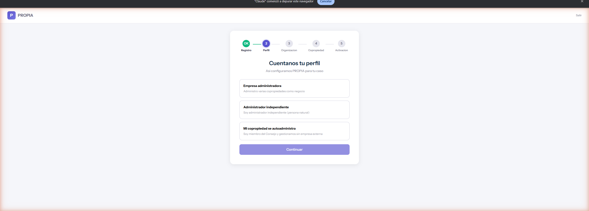
- En la pantalla de login, pulsa Continuar con Google.
- Google te muestra el selector de cuenta. Elige la cuenta con la que quieres ingresar.
- Si Google te pide consentimiento la primera vez, pulsa Continuar.
- PROPIA te lleva directamente a Mi Copropiedad o al wizard (si tu cuenta era nueva).
Crear cuenta nueva
Si tu copropiedad aun no esta en PROPIA, puedes crear tu cuenta tu mismo desde
la pantalla de login (No tienes cuenta? Crea una gratis) o desde
/registro.
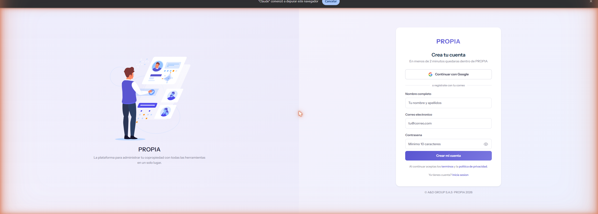
Datos que pide
| Campo | Reglas | Notas |
|---|---|---|
| Nombre completo | Minimo 3 caracteres | Aparecera en el directorio y correos firmados a tu nombre. |
| Correo electronico | Formato valido y unico en PROPIA | Sera tu usuario para ingresar siempre. |
| Contrasena | Minimo 10 caracteres, recomendado mayusculas + numero + simbolo | El medidor te muestra debil / media / fuerte. |
- Llena los tres campos.
- Pulsa Crear mi cuenta. PROPIA crea tu usuario y te envia un codigo OTP por correo.
- La pantalla cambia al paso de verificacion.
/registro. Saltas la creacion de contrasena y la verificacion del
correo, y entras directo al wizard.
Verificar tu correo (OTP)
Despues de registrarte, PROPIA te envia un correo con un codigo de 6 digitos. Sirve para confirmar que el correo es tuyo antes de activar la copropiedad.

PROPIA. Asunto: Bienvenido a PROPIA - codigo de verificacion.
- Abre tu bandeja de entrada y busca el correo con asunto Bienvenido a PROPIA.
- Copia el codigo de 6 digitos.
- Vuelve a PROPIA y pegalo en el campo grande.
- Pulsa Verificar y continuar.
Wizard de activacion
Con el correo verificado, PROPIA te guia por un asistente de 4 pasos cortos para crear tu copropiedad. Esto solo se hace UNA vez por copropiedad.
Los 4 pasos del wizard
- Cuentanos tu perfil. Eliges si eres Empresa administradora, Administrador independiente o Mi copropiedad se autoadministra. Esto configura el resto del flujo.
- Datos de tu organizacion. Nombre de la empresa administradora, NIT, telefono y email de contacto. Si te autoadministras, este paso es opcional.
- Tu primera copropiedad. Nombre, NIT, ciudad, direccion, tipo (residencial / comercial / mixto) y estrato.
- Revisa los datos y pulsa Activar mi cuenta. PROPIA crea la organizacion (si aplica), la copropiedad (tenant) y te lleva a Mi Copropiedad.
Vista general
Mi Copropiedad es la ficha viva de tu propiedad horizontal. Es donde se configuran los 8 bloques que el resto del sistema consume: identidad, distribucion, equipo, gobierno, servicios, zonas, equipos y finanzas.
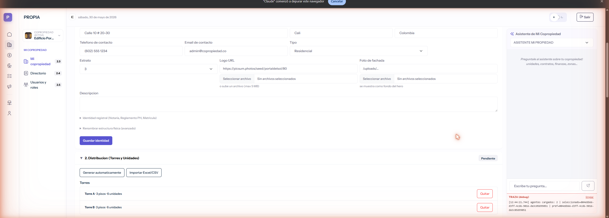
Como usar la pagina
- Las secciones aparecen colapsadas por defecto. Pulsa el titulo para expandir.
- El badge Completa indica que la seccion no tiene campos faltantes; Pendiente indica que aun hay algo por llenar.
- El Asistente IA (panel lateral derecho) te permite consultar y editar todo via chat.
- Tu preferencia de secciones colapsadas/expandidas se guarda por usuario.
1. Identidad
Datos basicos de tu copropiedad: nombre, NIT, direccion, telefono de contacto, email, tipo (residencial / comercial / mixto), estrato, logo y foto de fachada.
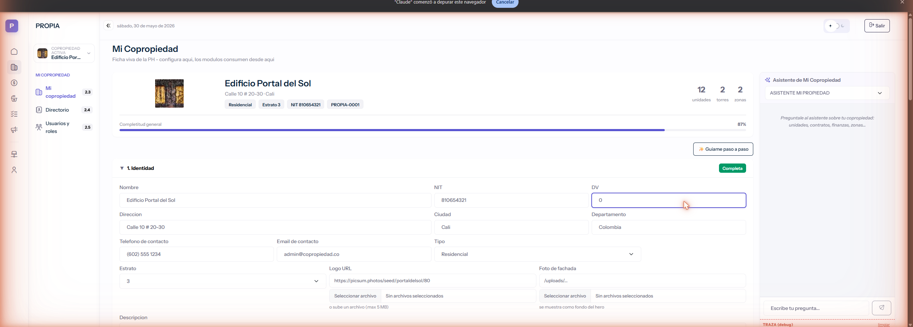
Campos
| Campo | Tipo | Notas |
|---|---|---|
| Nombre | Texto | Obligatorio. Aparece en el header y correos. |
| NIT y DV | Numero | NIT colombiano. El DV se calcula automaticamente. |
| Direccion | Texto libre | Aparece en cartillas, recibos y reportes. |
| Ciudad / Departamento | Texto | Para reportes y filtros. |
| Telefono de contacto | Texto | Visible para residentes en el directorio. |
| Email de contacto | Remitente de notificaciones de la copropiedad. | |
| Tipo | Lista | Residencial / Comercial / Mixto. |
| Estrato | 1 a 6 | Solo si es residencial. |
| Logo URL | Imagen | Aparece en correos, recibos PDF y el header del app. |
| Foto de fachada | Imagen | Aparece como fondo en el header de Mi Copropiedad. |
- Pulsa 1. Identidad para expandir.
- Edita el campo que necesites. Los cambios se guardan al hacer Tab fuera del campo.
- Para el logo y foto, pulsa Seleccionar archivo y sube el archivo (max 5 MB).
- El badge cambia a Completa cuando todos los obligatorios estan llenos.
2. Distribucion (Torres y Unidades)
Mapea la estructura fisica de tu copropiedad: las torres (o agrupaciones) y las unidades privadas (apartamentos, locales, parqueaderos, depositos, etc.) con sus coeficientes y vinculos.
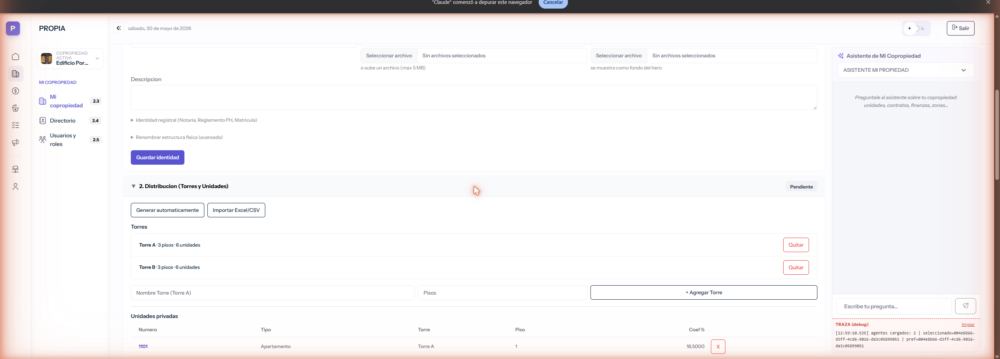
Anadir torre
- Pulsa + Anadir torre.
- Nombra la torre (ej. Torre A, Bloque 1).
- Indica cantidad de pisos.
- Guardar.
Anadir unidad
- Selecciona la torre donde va la unidad.
- Pulsa + Anadir unidad.
- Llena: numero, tipo (apartamento, local, parqueadero, deposito, otro), piso, area en m2, coeficiente.
- Opcional: si la unidad es secundaria (un parqueadero asociado a un apartamento), vinculala a la principal.
- Guardar.
3. Equipo de trabajo
Personas o empresas que trabajan para la copropiedad: administrador, contador, vigilancia, aseo, jardineria, etc. Pueden ser internos (empleados directos) o externos (subcontratados).
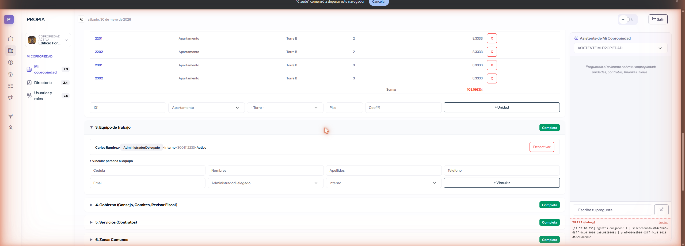
Anadir miembro
- Pulsa + Anadir miembro.
- Llena: nombre, rol (Administrador Delegado, Vigilante, Aseo, Contador, etc.), tipo de vinculacion.
- Datos de contacto: telefono, email.
- Vigencia: fecha de inicio y, opcional, fecha de fin.
- Guardar.
4. Gobierno (Consejo, Comites, Revisor Fiscal)
Los organos de gobierno de tu copropiedad: el Consejo de Administracion, los comites (convivencia, deportes, etc.) y el Revisor Fiscal.
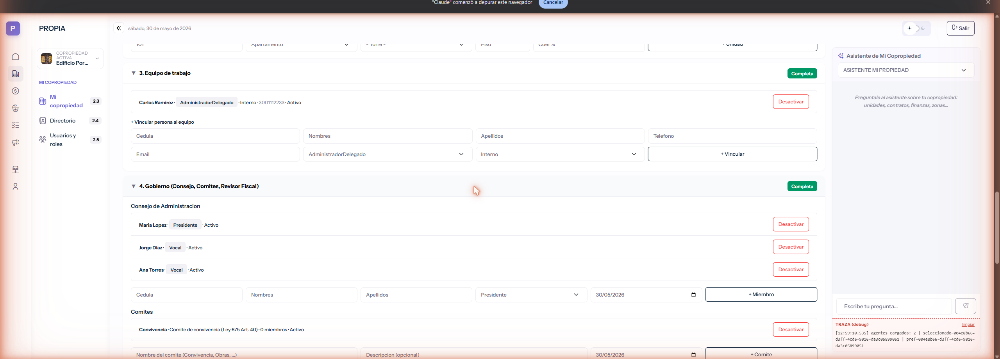
Anadir miembro del consejo
- Expande Consejo de Administracion.
- Pulsa + Anadir miembro.
- Nombre, cargo (Presidente, Vocal, Suplente), unidad que representa, vigencia.
- Guardar.
Crear comite
- Expande Comites.
- Pulsa + Nuevo comite.
- Nombre (Convivencia, Deportes, etc.), fecha de conformacion, descripcion.
- Anade los miembros.
Revisor Fiscal
- Expande Revisor Fiscal.
- Selecciona si es persona natural o empresa.
- Datos de contacto, periodo de vigencia.
5. Servicios (Contratos)
Contratos con proveedores: vigilancia, aseo, ascensores, internet, etc. Cada contrato tiene fecha de inicio, fecha de fin, monto y un preaviso para alertarte antes de que venza.
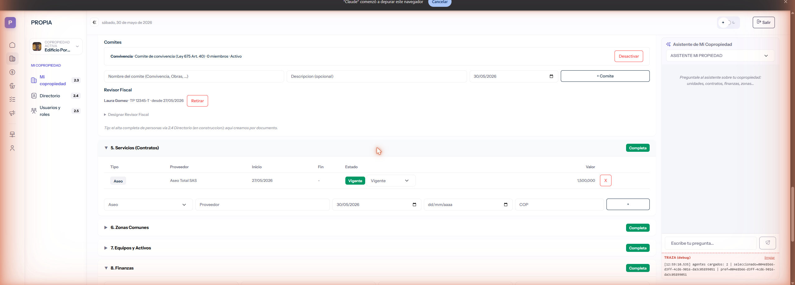
Anadir contrato
- Pulsa + Nuevo contrato.
- Selecciona el proveedor (o crealo desde Directorio).
- Tipo de servicio, descripcion.
- Fecha de inicio, fecha de fin, monto mensual.
- Dias de preaviso (por defecto 30): te alerta cuando faltan X dias para vencer.
- Opcional: adjunta el PDF del contrato firmado.
- Guardar.
6. Zonas Comunes
Salones, piscina, gimnasio, canchas, BBQ, parqueaderos de visitantes, etc. Cada zona define si es reservable, su tarifa, capacidad y reglas.
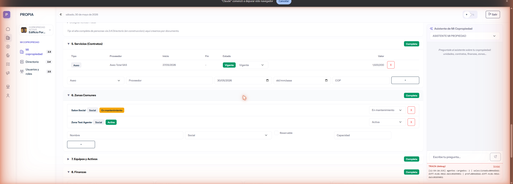
Anadir zona
- Pulsa + Nueva zona.
- Nombre y tipo (Salon, Piscina, Gimnasio, Cancha, BBQ, Parqueadero visitantes, Otro).
- Capacidad (personas) y descripcion.
- Si es reservable, activa el switch e indica tarifa (puede ser 0).
- Reglas de uso (texto libre).
- Guardar.
Cambiar estado
Para cerrar temporalmente una zona (mantenimiento, renovacion), cambia su estado a En mantenimiento. Las reservas existentes se respetan pero no se aceptan nuevas hasta que vuelva a Activa.
7. Equipos y Activos
Equipos fisicos de la copropiedad: bombas, ascensores, plantas electricas, paneles solares, sistemas de seguridad, antenas, etc. Cada equipo tiene marca, modelo, ubicacion, fecha de instalacion, garantia y observaciones.
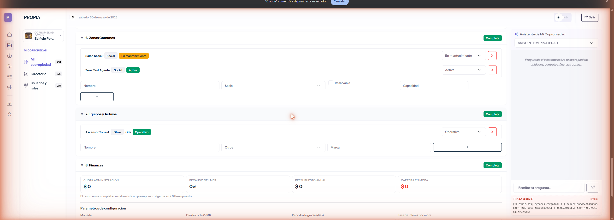
Categorias disponibles
Bombeo
Bombas de agua, jockey, equipos de presion.
Electricidad
Plantas electricas, UPS, transformadores, paneles solares.
Ascensores
Ascensores y montacargas.
Seguridad
CCTV, control de acceso, alarmas.
Comunicaciones
Antenas, repetidores WiFi, citofonia.
Climatizacion
HVAC, ventiladores industriales.
Recreacion
Equipos de gimnasio, juegos infantiles.
Otros
Cualquier otro activo.
- Pulsa + Nuevo equipo.
- Llena: nombre, categoria, ubicacion, marca, modelo, numero de serie, fecha de instalacion, garantia hasta, observaciones.
- Guardar.
- Opcional: anade el equipo a un plan de mantenimiento preventivo.
8. Finanzas
Parametros financieros de la copropiedad: coeficientes por tipo, cuota de administracion base, dia de corte, dia de pago, intereses por mora y otros parametros que usa el modulo de Cartera y los recibos.
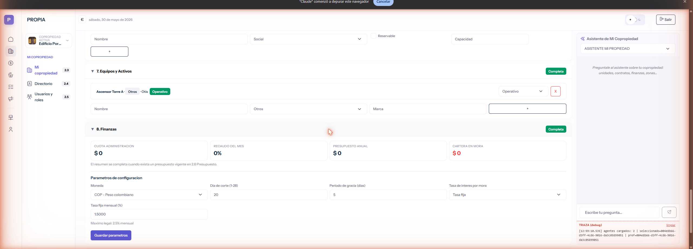
Tipos de coeficiente
Por defecto PROPIA crea el coeficiente Propiedad (Ley 675). Puedes crear coeficientes adicionales para distribuir gastos especiales (por ejemplo, Parqueadero, Mascota, Solo apartamento, etc.).
Asignar coeficiente a una unidad
- Edita la unidad desde Distribucion o usa el Asistente IA.
- Elige el tipo de coeficiente.
- Asigna el valor (la suma de todas las unidades en ese tipo debe coincidir con su suma esperada).
Directorio
Personas y empresas relacionadas con la copropiedad: residentes, propietarios, arrendatarios, proveedores de servicios, contactos de emergencia. Es el catalogo central de contactos.
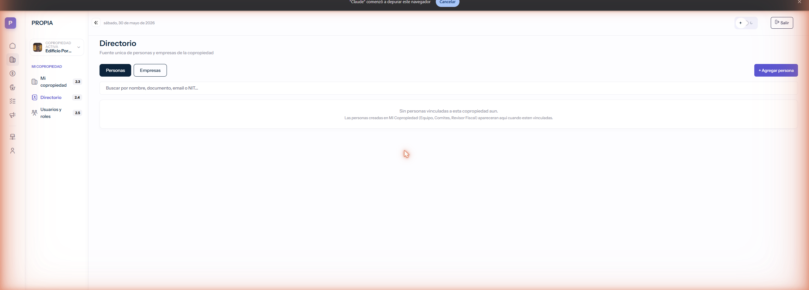
Crear contacto
- Pulsa + Nueva persona o + Nueva empresa.
- Datos basicos: nombre, documento, telefono, email.
- Etiquetas (residente, propietario, arrendatario, proveedor, etc.).
- Si es residente o propietario, vinculalo a una unidad.
- Guardar.
Usuarios y roles
Personas con acceso al sistema PROPIA de tu copropiedad. Diferente al directorio (un residente puede estar en el directorio sin tener acceso). Cada usuario tiene un rol que define que puede ver y hacer.
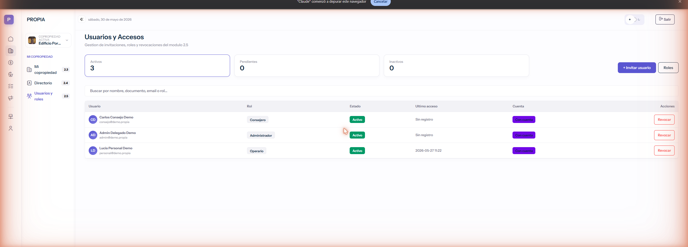
Roles preconfigurados
| Rol | Que puede |
|---|---|
| Administrador | Todo. Es el rol del administrador delegado. |
| Consejero | Lectura completa, puede aprobar gastos y crear comunicaciones. |
| Operario | Solo modulos operativos (porteria, mantenimiento, reservas). |
| Residente | Solo su unidad, su cartera, reservas y PQRSD. |
Invitar usuario
- Pulsa Invitar usuario.
- Correo, rol y, si es residente, unidad asignada.
- El sistema envia un correo con un enlace de invitacion (vigente 7 dias).
- Cuando el usuario acepta, se crea su cuenta y queda Activo.
PQRSD
Peticiones, Quejas, Reclamos, Sugerencias y Denuncias de los residentes. Cada caso tiene SLA, responsable asignado, historial de respuestas y estado (Abierto / En proceso / Cerrado).
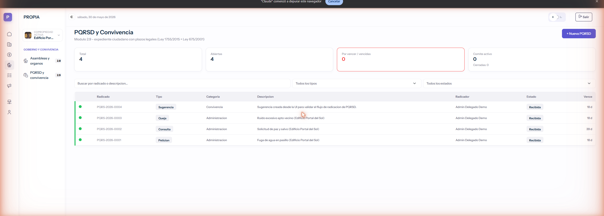
- Las PQRSD las crean los residentes desde su portal (o tu las creas a su nombre).
- Tu, como administrador, las asignas a un responsable.
- El responsable responde dentro del SLA.
- Cuando hay respuesta, el residente recibe correo y notifica.
- Al cerrarse, el residente puede calificar el servicio.
Cartera
Estado de cuenta por unidad: facturas emitidas, pagos recibidos, saldo a favor o en mora, intereses calculados. Es la fuente de verdad financiera del residente.
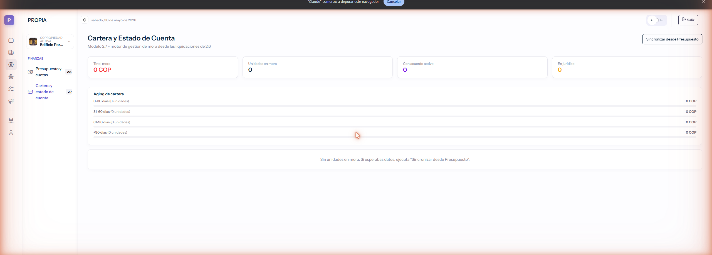
Operaciones comunes
- Generar facturacion del mes (botón Generar facturas) — crea las facturas de cuota administracion para todas las unidades activas.
- Registrar pago — manual (consignacion) o automatico (Wompi cuando este configurado).
- Aplicar nota credito — para correcciones o cortesias.
- Plan de pago — para residentes en mora que negocian un acuerdo.
Presupuesto
Presupuesto anual aprobado por la asamblea. Comparativo entre presupuestado y ejecutado, mes a mes y por rubro.
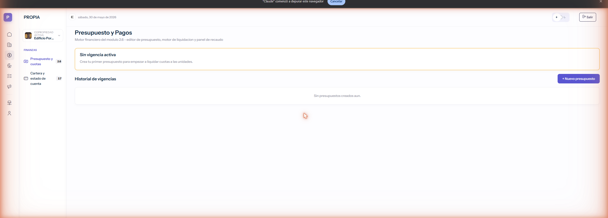
- Cada inicio de ano, crea el presupuesto con los rubros (administracion, mantenimiento, vigilancia, fondo de imprevistos, etc.).
- Asignale el monto anual y, opcional, el monto mensual.
- A medida que se generan gastos en otros modulos, se imputan al rubro y el ejecutado sube.
Tareas
Tablero de pendientes de la copropiedad. Algunas tareas se crean automaticamente (contratos por vencer, mantenimientos programados, asambleas) y otras las creas manualmente.
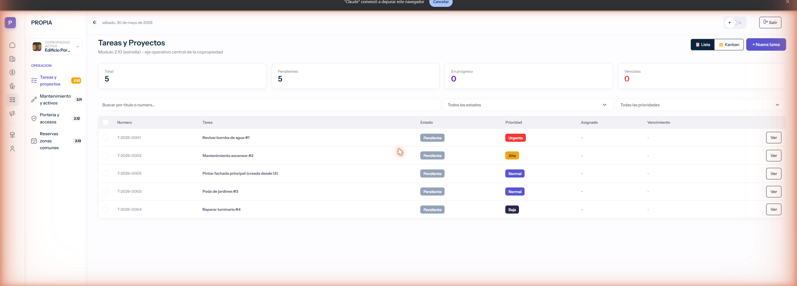
Anadir tarea
- Pulsa + Nueva tarea.
- Titulo, descripcion, responsable, prioridad, fecha limite.
- Opcional: relacionala con un contrato, unidad, PQRSD o equipo.
- Guardar.
Documentos
Repositorio central de documentos de la copropiedad: reglamento, actas de asamblea, manuales de equipos, certificados. Organizados por carpetas con control de versiones.
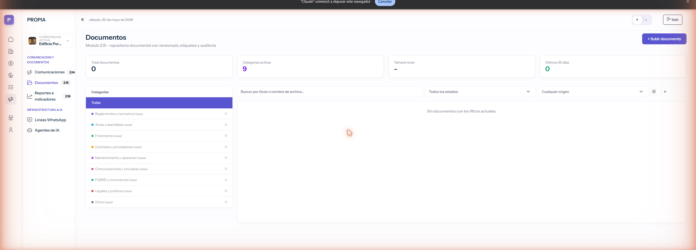
- Crea carpetas por tema (Reglamento, Actas, Contratos, Manuales, etc.).
- Sube archivos arrastrandolos o usando el boton + Subir (max 50 MB por archivo).
- Define quien puede ver cada carpeta (todos / consejeros / solo administracion).
Asambleas
Convocatoria, votacion, asistencia y acta de las asambleas. Cubre asamblea ordinaria anual y extraordinarias.
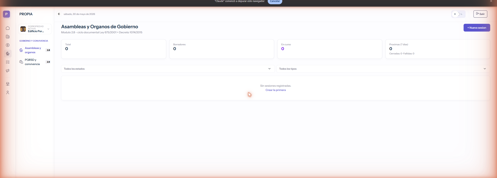
Crear asamblea
- + Nueva asamblea.
- Tipo (Ordinaria / Extraordinaria), fecha, hora, lugar (puede ser virtual).
- Orden del dia: anade los puntos.
- Convocatoria: envia el correo con la convocatoria a todos los residentes.
- El dia de la asamblea, registra asistencia (manual o con codigo QR) y captura las votaciones.
- Al cerrar, genera el acta automaticamente.
Reservas de zonas comunes
Calendario de reservas de zonas comunes (salon, BBQ, cancha, etc.). Las solicitan los residentes desde su portal; tu las apruebas o rechazas si tienen reglas especiales.
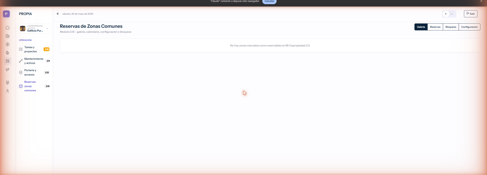
Comunicaciones
Envia comunicados a los residentes: por correo, por WhatsApp (si la linea esta conectada) o ambos. Plantillas reutilizables, segmentacion por torre o estado de mora.
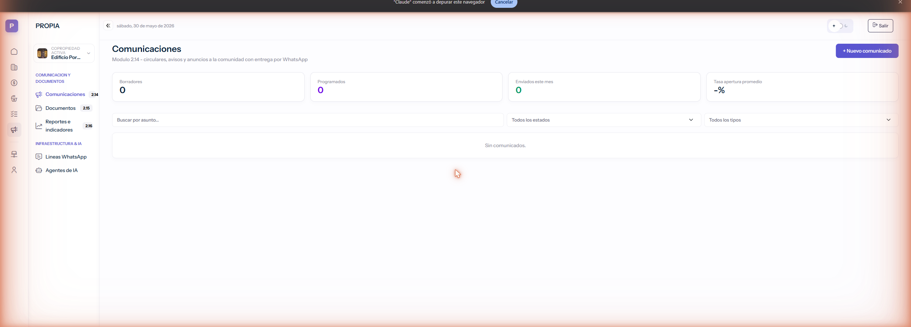
Porteria
Registro de visitantes, paqueteria, autorizaciones de ingreso. Para los vigilantes es la pantalla principal de operacion del dia a dia.
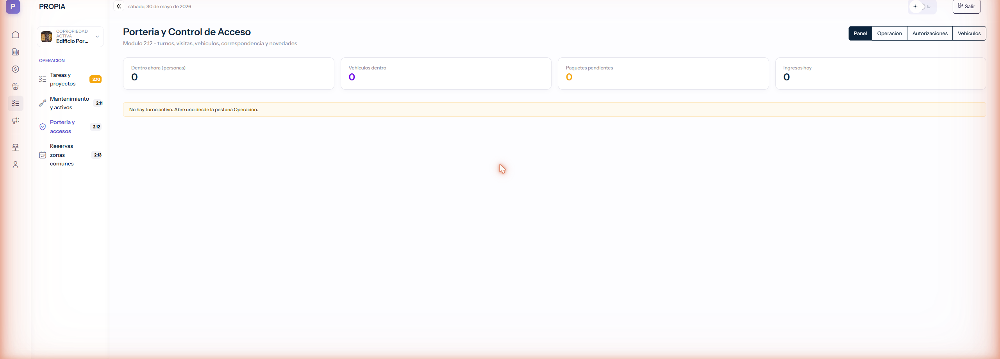
Mantenimiento
Plan de mantenimiento preventivo de los equipos. Cada equipo puede tener varios mantenimientos programados (por ejemplo, bomba: revision mensual, cambio de aceite semestral, cambio de empaques anual).
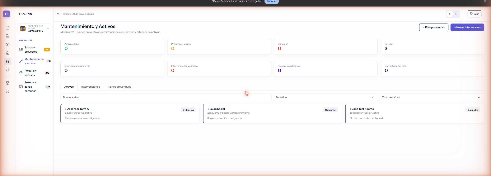
Reportes
Reportes en PDF y Excel para asamblea, contabilidad y auditoria.
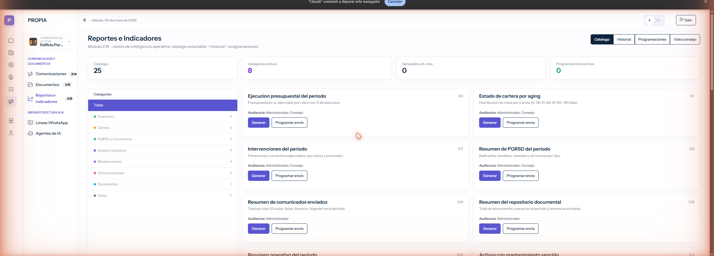
Estado de cartera
Saldos por unidad, dias de mora, total a cobrar.
Ejecucion presupuestal
Comparativo presupuesto vs ejecutado por rubro.
Asistencia asambleas
Quorum por asamblea, votaciones registradas.
PQRSD del periodo
Volumen, SLA cumplido, satisfaccion.
Mantenimientos
Programado vs ejecutado, costos.
Visitantes y paquetes
Historial agregado de porteria.
Dashboard
Vista consolidada de los indicadores claves de la copropiedad: cartera, ocupacion, contratos por vencer, mantenimientos del mes, PQRSD abiertas.
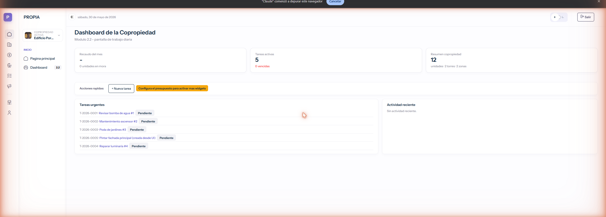
Usar el Asistente IA
El panel del Asistente vive en la columna derecha de Mi Copropiedad. Te permite consultar y operar la copropiedad en lenguaje natural. Bajo el capot, usa tools MCP que conectan directamente con tu base de datos.
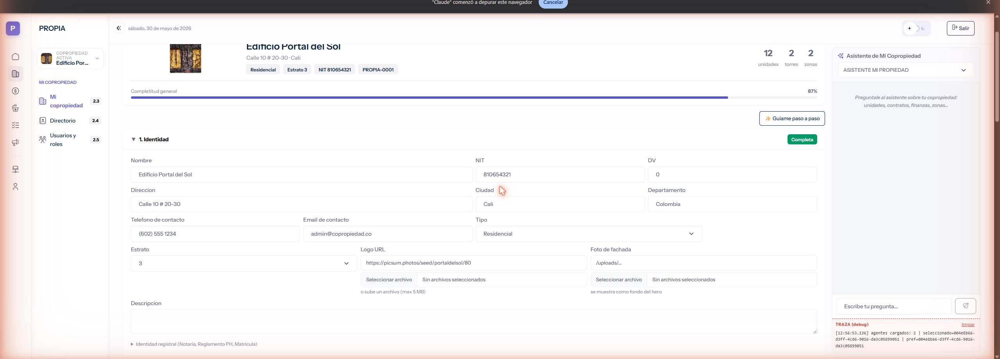
Ejemplos de preguntas
- "Lista las torres y cuantas unidades tiene cada una."
- "Dame el resumen de la copropiedad: nombre, NIT, ciudad."
- "Muestra los contratos por vencer en los proximos 90 dias."
- "Lista los miembros del consejo de administracion."
- "Crea una zona comun llamada Patio Trasero, tipo Salon, capacidad 20."
- "Cambia el coeficiente Propiedad de la unidad 1101 a 16.5."
Configurar agentes
Puedes tener uno o varios agentes con personalidades y tools diferentes. Ej. un Asistente General que consulta todo, y un Asistente Financiero especializado en cartera y presupuesto.
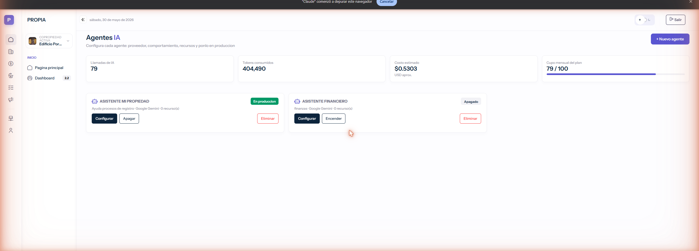
Crear agente
- Pulsa + Nuevo agente.
- Nombre, descripcion, proveedor (Claude, Gemini, GPT) y modelo.
- System prompt (cuando es agente, su rol y como debe responder).
- Tools MCP habilitadas (cuales puede usar de la lista).
- Guarda y Enciende el agente.
Lineas WhatsApp
Conecta numeros de WhatsApp para que tu agente IA atienda a residentes y proveedores por chat. Usa el conector de Evolution API configurado por la plataforma.
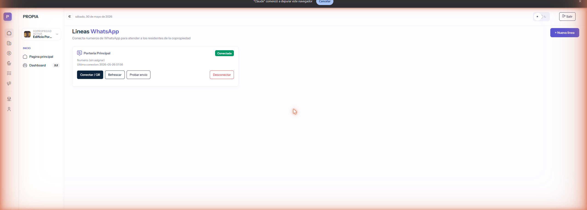
- Pulsa + Nueva linea.
- Nombra la linea (ej. Atencion a residentes).
- Pulsa Conectar. Se abre un QR.
- Desde tu telefono, abre WhatsApp > Dispositivos vinculados > Vincular dispositivo y escanea el QR.
- Asigna el agente IA que respondera los mensajes.
Cambiar de copropiedad
Si administras varias copropiedades con la misma cuenta, puedes alternar entre ellas desde el selector de la esquina superior izquierda (al lado del logo PROPIA).
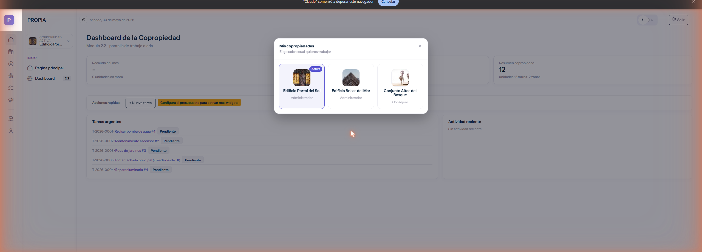
- Pulsa el selector con el nombre de la copropiedad actual.
- Elige la copropiedad a la que quieres ir.
- El sistema cambia el contexto y te redirige a Mi Copropiedad.
Mi perfil
Tu perfil personal: nombre, foto, contrasena y preferencias (tema claro/oscuro, notificaciones).
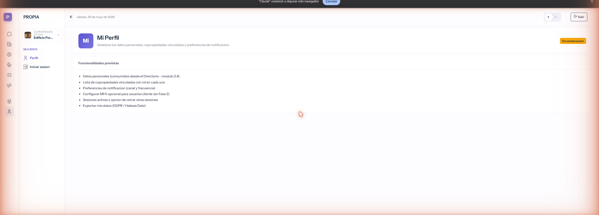
Cambiar contrasena
- Va a Cambiar contrasena.
- Escribe tu contrasena actual.
- Escribe la nueva (minimo 10 caracteres).
- Confirma la nueva.
- Guardar.
Cerrar sesion
Cierra la sesion desde el boton Salir en el header (esquina superior derecha) o desde Mi perfil → Cerrar sesion.